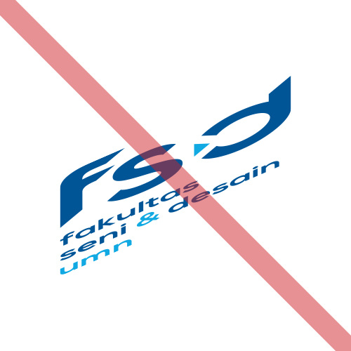

Identitas Fakultas Seni & Desain Universitas Multimedia Nusantara diwakilkan oleh bentuk segitiga yang memiliki berbagai makna yang memotivasi dalam meningkatkan citra sebagai lembaga pendidikan unggulan dalam meningkatkan kualitas sumber daya manusia di Indonesia.
Logo
Fakultas Seni & Desain
Segitiga mengarah ke kanan ( ► ) merepresentasikan nilai kemajuan, bergerak dimana Fakultas Seni & Desain selalu bergerak mengikuti perkembangan jaman dalam rangka turut menghasilkan lulusan yang meningkatkan kualitas sumber daya manusia.
Desain Komunikasi Visual
Segitiga mengarah ke atas ( ▲ ) merepresentasikan nilai elevate yaitu peningkatan mutu dan menghasilkan lulusan yang mampu bersaing dalam kontestasi global.
Film & Televisi
Segitiga mengarah ke kiri atas ( ◤ ) merepresentasikan nilai cutting-edge yaitu menjadi pelopor terdepan dalam menghasilkan karya yang inovatif melalui pemanfaatan teknologi terkini.
Arsitektur
Segitiga mengarah ke kanan atas ( ◥ ) merepresentasikan nilai progressive yaitu perubahan menuju ke arah yang lebih baik melalui terciptanya karya yang mampu memecahkan masalah manusia atas lingkungannya.
Varian
Varian vertikal
Varian logo utama yang digunakan dengan konfigurasi teks vertikal di bawah logo.
Varian horizontal
Varian yang digunakan untuk keperluan khusus pada media yang membutuhkan ukuran lebih pendek.
Warna
Fakultas Seni & Desain
Warna biru tua pada Fakultas Seni & Desain menggunakan warna utama Universitas Multimedia Nusantara yang merepresentasikan visi menjadi perguruan tinggi unggulan di bidang teknologi informasi.
Warna biru muda merepresentasikan nilai profesionalitas yang dimiliki setiap mahasiswa dalam berkarya.
Desain Komunikasi Visual
Warna utama adalah oranye yang merepresentasikan nilai kreativitas.
Perpaduan dengan warna tiil merepresentasikan mahasiswa Program Studi Desain Komunikasi Visual juga turut memiliki kesadaran lingkungan dalam berkarya secara kreatif.

Film & Televisi
Warna utama adalah ungu yang merepresentasikan nilai pemanfaatan teknologi.
Perpaduan dengan warna oranye merepresentasikan mahasiswa Program Studi Film & Televisi mengedepankan nilai kreativitas dalam berkarya didukung oleh pemanfaatan teknologi.
Arsitektur
Warna utama adalah tiil yang merepresentasikan nilai kesadaran lingkungan.
Perpaduan dengan warna ungu merepresentasikan mahasiswa Program Studi Arsitektur memanfaatkan teknologi terkini dalam menciptakan karya yang memecahkan masalah lingkungan.
Tipografi
Aturan
Varian penuh
Varian logo utama yang digunakan untuk kebutuhan eksternal tanpa adanya logo UMN sebagai pendamping.
Varian akronim
Varian yang digunakan bila terdapat logo UMN sebagai pendamping. Akronim bertujuan meringankan beban visual di mana akronim dijelaskan pada logo UMN.
Varian negatif
Varian yang digunakan untuk keperluan khusus contoh stempel atau media dengan latar belakang berwarna.
Ukuran dan jarak
Penggunaan identitas wajib memiliki batas area kosong pada setiap sisinya yang ditentukan sebanyak 3 kali segitiga. Hal ini ditujukan untuk menjaga tingkat keseimbangan dan keterbacaan pada identitas yang ditampilkan.
Penggunaan pada latar belakang foto
Utamakan penggunaan logo varian negatif dengan latar transparan pada penggunaan dengan latar belakang yang memiliki banyak warna (foto atau video). Hindari penempatan logo dalam latar belakang yang terlalu ramai atau memiliki warna yang kurang kontras dengan logo.
Larangan
Memisahkan bagian logo
Logo wajib ditampilkan secara penuh dan elemen individual dalam logo tidak diperkenankan dipisahkan.
Mengubah komposisi logo
Tidak diperkenankan mengubah komposisi logo selain bentuk horizontal dan vertikal yang telah ditetapkan.
Mengganti tipografi logo
Teks dalam logo wajib menggunakan jenis tipografi yang telah ditentukan.
Mengubah warna logo
Tidak diperkenankan warna selain penggunaan varian negatif.

Mengubah ukuran dengan tidak proporsional
Logo wajib ditampilkan secara utuh dan tidak terdistorsi.
Meletakkan logo berwarna didepan foto/gambar
Peletakan logo wajib mempertimbangkan aspek keterbacaan. Penggunaan logo berwarna hanya ditujukan untuk latar belakang polos atau tingkat kecerahan diatas 75%.
Contoh penggunaan
Kop untuk surat atau formulir
Penggunaan pada media daring
Identitas Visual
Identitas visual tersedia untuk diunduh dalam berkas ZIP yang berisi:
- Logo dan palet warna format vektor EPS
- Logo format PNG transparan
- Supergrafis format vektor EPS
Bumper Program Studi Film & Televisi
Karya tugas akademik wajib mencantumkan identitas fakultas dan program studi pada bagian awal dan akhir karya yang tersedia di bawah ini.